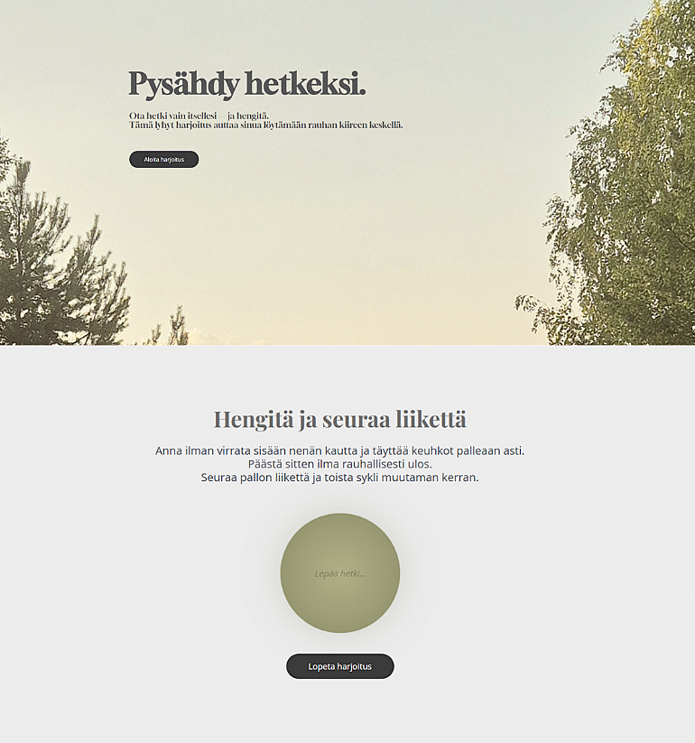

Interaktiivinen hengitysharjoitus-sivusto
Rauhoittava harjoituskokemus | WordPress + HTML + CSS + JavaScript
Kuvaus
Toteutin verkkosivun, joka ohjaa käyttäjää lyhyiden hengitysharjoitusten läpi visuaalisesti ja rauhallisesti. Sivustolla käytetään animaatioita, vaiheittaisia ohjeita ja hengityspallon liikettä.
Roolini ja toteutus
Suunnittelin sivuston UI:n rauhalliseksi ja helppokäyttöiseksi, ja toteutin interaktiiviset osiot WordPressin lisäksi HTML-, CSS- ja JavaScript-koodeilla.
Keskeiset ominaisuudet
- Animoitu hengityspallo visualisoi rytmin
- Vaiheittainen ohjaus
- Rauhallinen ja selkeä visuaalinen suunnittelu
- Responsiivinen eri laitteilla
Opitut asiat
Opin lisää web-animaatioista, interaktiivisista elementeistä ja visuaalisen rytmin suunnittelusta.
Teknologiat
WordPress, HTML, CSS, JavaScript
